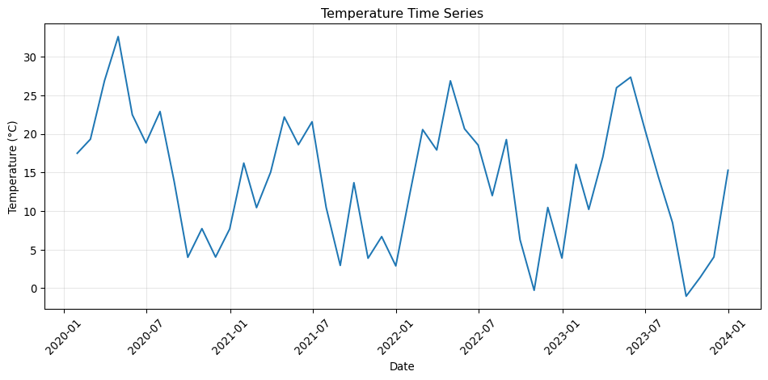

This cheatsheet covers essential datetime and time series operations in pandas needed for environmental data analysis.
Setup
Code
import pandas as pdimport numpy as npimport matplotlib.pyplot as plt# Set random seed for reproducible examplesnp.random.seed(42)# Create sample time series datadates = pd.date_range('2020-01-01', '2023-12-31', freq='ME')temperature = np.random.normal(15, 5, len(dates)) +10* np.sin(np.arange(len(dates)) *2* np.pi /12)sample_df = pd.DataFrame({'date': dates,'temperature': temperature,'co2': 400+ np.cumsum(np.random.normal(0.1, 0.5, len(dates)))})
Loading Time Series Data
Reading CSV with Date Parsing
Code
# Parse dates while reading CSV (most efficient method)# df = pd.read_csv('data.csv', parse_dates=['Date'])# For demonstration, save and reload sample datasample_df.to_csv('temp_data.csv', index=False)df = pd.read_csv('temp_data.csv', parse_dates=['date'])print(f"Date column dtype: {df['date'].dtype}")print(f"Data shape: {df.shape}")
Date column dtype: datetime64[ns]
Data shape: (48, 3)
Converting Strings to Datetime
Code
# Convert year-only data to datetime (common in environmental datasets)year_data = pd.DataFrame({'year': [2020, 2021, 2022, 2023],'annual_temp': [14.5, 15.2, 14.8, 15.6]})year_data['date'] = pd.to_datetime(year_data['year'], format='%Y')print(year_data.head())
year annual_temp date
0 2020 14.5 2020-01-01
1 2021 15.2 2021-01-01
2 2022 14.8 2022-01-01
3 2023 15.6 2023-01-01
Setting DateTime Index
Code
# Set date column as index for time series operationsdf_indexed = df.set_index('date')print(f"Index is datetime: {pd.api.types.is_datetime64_any_dtype(df_indexed.index)}")print(df_indexed.head())
Index is datetime: True
temperature co2
date
2020-01-31 17.483571 400.271809
2020-02-29 19.308678 399.490289
2020-03-31 26.898697 399.752331
2020-04-30 32.615149 399.659790
2020-05-31 22.489487 399.421329
Extracting Date Components
Code
# Extract date components using .dt accessordf['year'] = df['date'].dt.yeardf['month'] = df['date'].dt.monthdf['quarter'] = df['date'].dt.quarter# Create decade grouping (useful for climate analysis)df['decade'] = (df['date'].dt.year //10) *10print(df[['date', 'year', 'month', 'decade']].head())
Year-over-year changes:
temperature temp_change co2 co2_change
date
2020-12-31 16.479777 NaN 400.298642 NaN
2021-12-31 12.043841 -4.435936 401.834578 1.535936
2022-12-31 14.033324 1.989483 403.788055 1.953477
2023-12-31 13.337112 -0.696212 404.590108 0.802053
Rolling Averages
Code
# Calculate 12-month rolling averagedf_indexed['temp_rolling'] = df_indexed['temperature'].rolling(window=12).mean()print("Original vs rolling average:")print(df_indexed[['temperature', 'temp_rolling']].head(15))
Original vs rolling average:
temperature temp_rolling
date
2020-01-31 17.483571 NaN
2020-02-29 19.308678 NaN
2020-03-31 26.898697 NaN
2020-04-30 32.615149 NaN
2020-05-31 22.489487 NaN
2020-06-30 18.829315 NaN
2020-07-31 22.896064 NaN
2020-08-31 13.837174 NaN
2020-09-30 3.992374 NaN
2020-10-31 7.712800 NaN
2020-11-30 4.022657 NaN
2020-12-31 7.671351 16.479777
2021-01-31 16.209811 16.373630
2021-02-28 10.433599 15.634040
2021-03-31 15.035665 14.645454
Time Series Filtering
Selecting Date Ranges
Code
# Select data from specific yeardata_2022 = df_indexed[df_indexed.index.year ==2022]print(f"Data from 2022: {len(data_2022)} records")# Select data from date rangerecent_data = df_indexed.loc['2023-01-01':'2023-06-30']print(f"First half 2023: {len(recent_data)} records")# Filter using datetime conditionsmodern_data = df[df['date'] >= pd.to_datetime('2022-01-01')]print(f"Modern data (2022+): {len(modern_data)} records")
Data from 2022: 12 records
First half 2023: 6 records
Modern data (2022+): 24 records
Filtering by Date Components
Code
# Filter by month (e.g., all January data)january_data = df[df['date'].dt.month ==1]# Filter by seasonwinter_data = df[df['season'] =='Winter']# Filter by decaderecent_decade = df[df['decade'] ==2020]print(f"January records: {len(january_data)}")print(f"Winter records: {len(winter_data)}")print(f"2020s decade: {len(recent_decade)}")
January records: 4
Winter records: 12
2020s decade: 48
Merging Time Series Data
Code
# Create second dataset with different frequencydaily_dates = pd.date_range('2022-01-01', '2022-12-31', freq='D')np.random.seed(123)daily_data = pd.DataFrame({'precipitation': np.random.exponential(2, len(daily_dates))}, index=daily_dates)# Resample to monthly to match original data frequencymonthly_precip = daily_data.resample('ME').sum()# Merge with existing datamerged_data = pd.merge(df_indexed, monthly_precip, left_index=True, right_index=True, how='inner')print("Merged time series data:")print(merged_data.head())
Merged time series data:
temperature co2 temp_rolling precipitation
2022-01-31 12.278086 403.644014 11.716197 51.491886
2022-02-28 20.554613 404.526336 12.559615 56.312308
2022-03-31 17.905286 403.316464 12.798750 51.965009
2022-04-30 26.878490 403.827415 13.189577 61.195394
2022-05-31 20.657061 403.970938 13.361324 69.480568
Basic Time Series Visualization
Code
# Simple time series plotfig, ax = plt.subplots(figsize=(10, 5))ax.plot(df_indexed.index, df_indexed['temperature'])ax.set_title('Temperature Time Series')ax.set_xlabel('Date')ax.set_ylabel('Temperature (°C)')ax.tick_params(axis='x', rotation=45)ax.grid(True, alpha=0.3)fig.tight_layout()plt.show()

Key Reminders
Always parse dates when loading data using parse_dates parameter
Set datetime as index for time series operations with set_index()
Use .dt accessor to extract date components from datetime columns
Use numeric_only=True when resampling mixed data types
Use consistent frequency codes for resampling operations